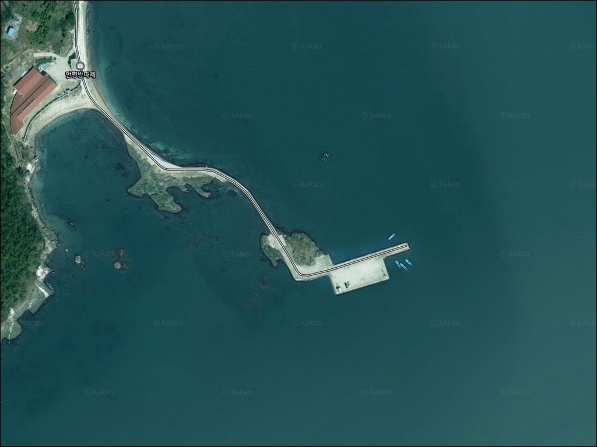
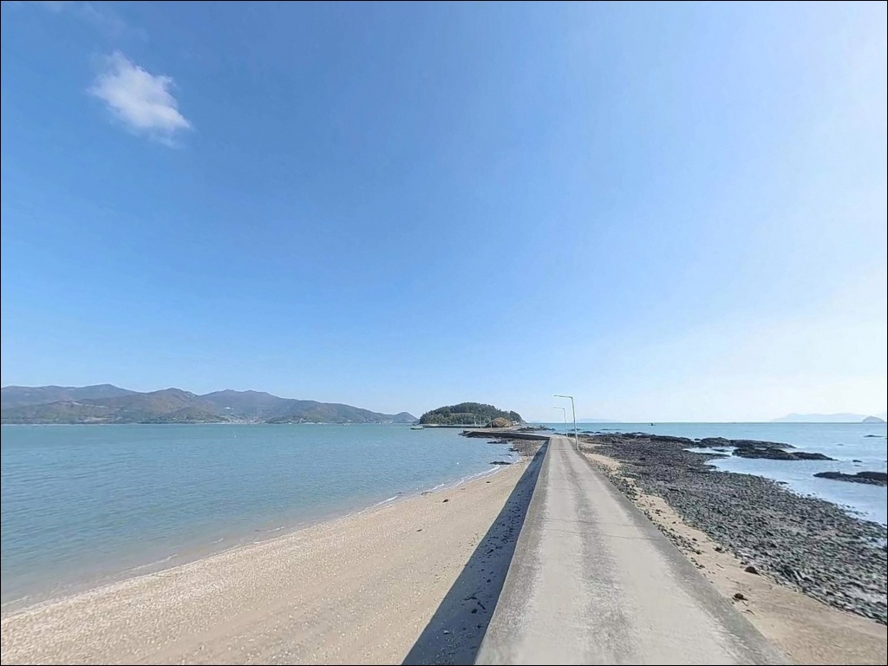
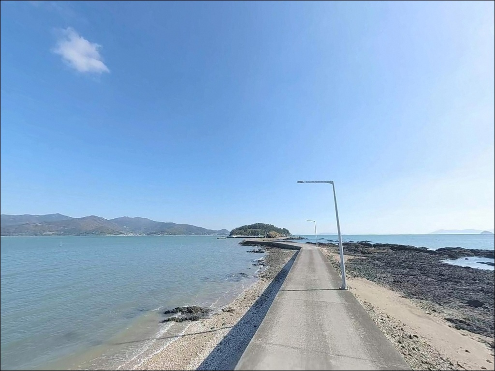
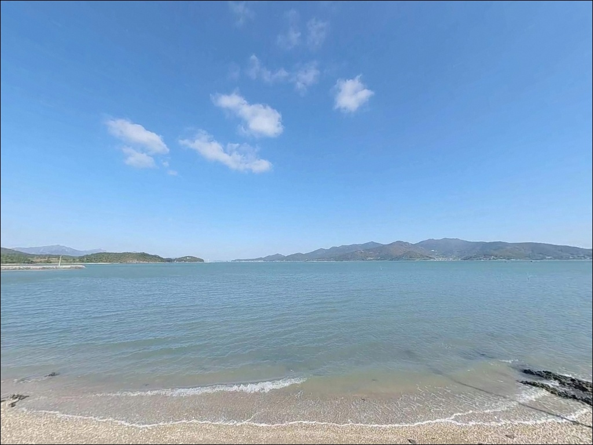
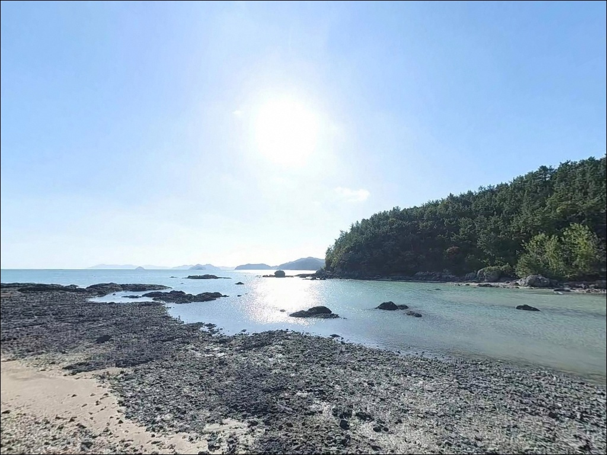
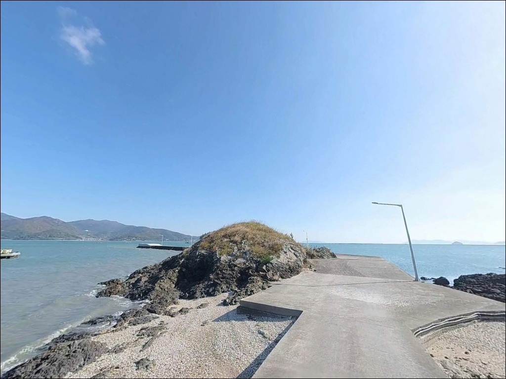
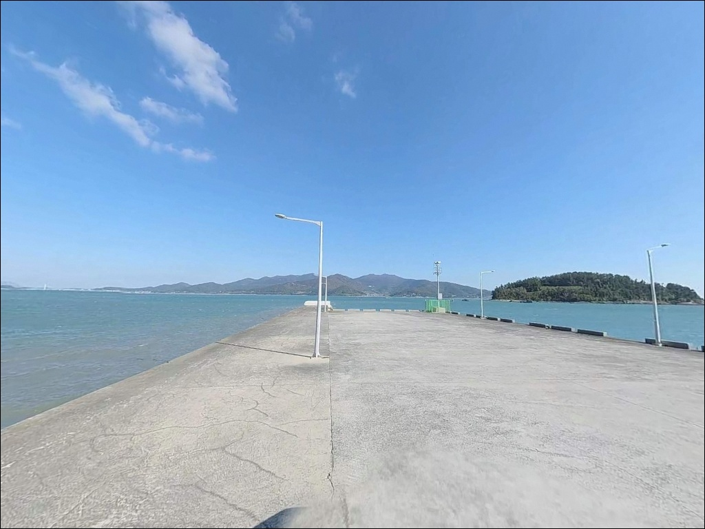
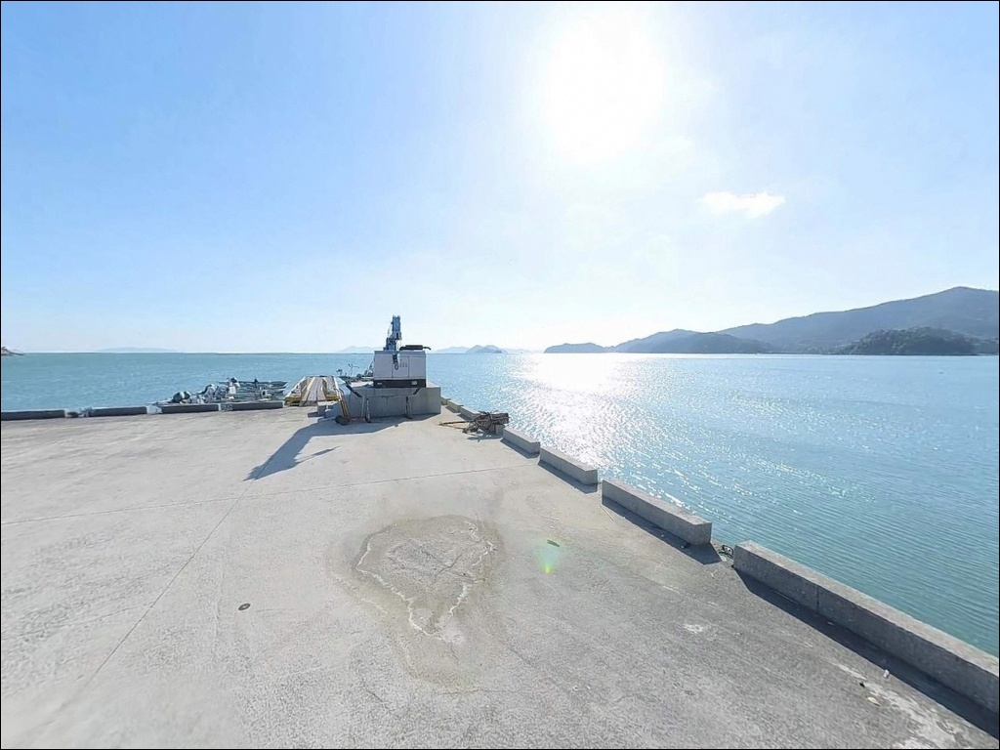
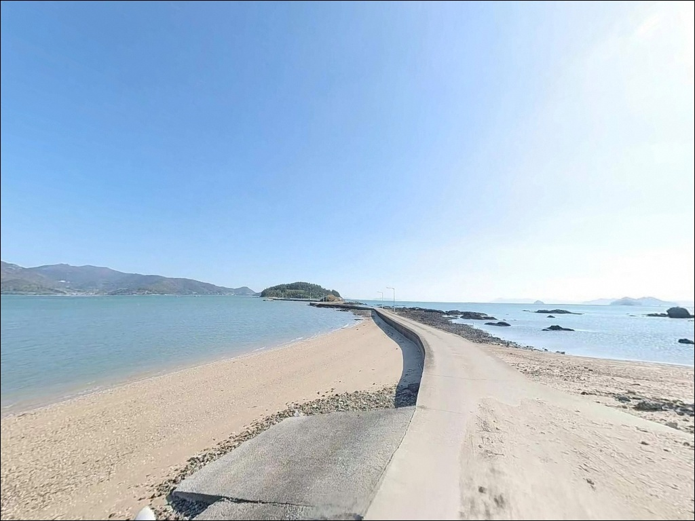

안평방파제, 전남 해남군 가볍게 다녀오기 좋은 당일치기 바다 차박 낚시 포인트
이 페이지에는 광고(제휴 링크 포함)가 있으며, 광고 링크를 통해 구매하면 운영자가 판매 수익 또는 수수료를 받을 수 있습니다. 포인트 사진: 카카오맵 스카이뷰·로드뷰. 이 페이지의 지도·사진 이미지는 카카오맵의 실제 서비스 이미지와 다를 수 있습니다.


포인트 안내
안평방파제
전남 해남군 북평면 평암리 산 172
물때 확인 없이 안평방파제를 찾으면
방파제 주변이 갯벌로 바뀐 상황을
그대로 마주하게 됩니다.
수심이 -0.4~-0.1m 수준인 이 포인트는
간조 전후 낚시가 사실상 불가능한 구조이며,
들물 타이밍이 맞아야만
채비를 운용할 수 있습니다.
북평면 평암리 안평마을에 자리한
이 방파제는 해남반도 남단,
완도와 마주보는 수도 구간 해안선에
위치한 소규모 어촌정주어항입니다.
물때가 맞으면 감성돔·숭어·도다리 등
다양한 어종을 노릴 수 있는
기본기 갖춘 방파제 포인트입니다.
이 글은 안평방파제의 물때 판단 기준,
진입 환경, 차박 여건,
낚시 방식 적합성에 집중합니다.
조황 단정이나 특정 어종 보장은
이 글의 범위에 포함되지 않습니다.

1. 진입 동선과 포인트 접근성
안평방파제는 북평면 평암리 안평마을을
통해 진입하는 구조입니다.
내륙 도로에서 해안 방향으로 들어오는
마을 진입로는 편도 1차로 수준의
좁은 포장 도로 구간이 이어집니다.
소형~중형 차량은 진입에
큰 무리가 없는 편이지만,
대형 SUV나 캠핑 장비를
가득 실은 차량이라면
출발 전 위성지도로 진입로를
한 번 확인하고 가는 편이 안전합니다.
선착장 내부에는 차량이 돌아 나올 수 있는
공간이 확보되어 있는 구조입니다.
주차는 방파제 초입 공터 또는
마을 어촌계 공간 주변을 활용하는 방식이
일반적입니다.
어선 이동 동선과 어민 작업 구간을
막지 않는 자리가 우선이며,
통행에 방해가 되지 않도록
주차 위치를 잡는 것이 기본 매너입니다.

2. 차박 환경과 야간 체류 여건
안평마을은 민가 수가 적은
소규모 어촌 마을입니다.
야간에는 차량 통행이 거의 없고
외부 노출도 낮아
차박 프라이버시는 비교적 조용한 환경입니다.
다만 방파제 끝단까지
가로등이 충분하지 않으므로,
야간 낚시와 이동 모두
헤드랜턴을 반드시 챙겨야 합니다.
펄 바닥 해안선이라는 점도
야간 이동 시 고려해야 합니다.
간조 전후에는 방파제 주변으로
갯벌이 노출되므로
조명 없이 이동하면
방향 감각을 잃거나
발이 빠지는 상황이 생길 수 있습니다.
차박을 겸할 경우에는 물때와
야간 이동 동선을 함께 계획해
두는 것이 안전합니다.


3. 주변 편의시설 및 인프라 현황
안평방파제에서 차로 5~7분 거리인
북평면 소재지 남창리에
하나로마트, 편의점, 식당, 주유소가
모여 있습니다.
낚시 소품이나 식재료를
현장 출발 전 보충하거나,
출조 중 부족한 물자를
비교적 빠르게 보급할 수 있는
인프라가 갖춰져 있는 편입니다.
반경 10km 이내에는
응급실을 운영하는 해남우리병원이
위치해 있습니다.
섬 지역이 아닌 육지 해안선에
자리하고 있어
비상 상황 대응 접근성은
도서 포인트보다 나은 편입니다.
방파제 자체 편의시설은
현장에서 직접 확인하는 것이
현실적인 방법입니다.

4. 방문 전 반드시 확인할 준비사항
안평방파제 방문 전 가장 먼저 해야 할 일은
바다타임에서 해당 일자의
만조 시각과 물때를 확인하는 것입니다.
수심 -0.4~-0.1m의 극천해 구조상
간조 전후 2~3시간은
낚시 자체가 불가능한 시간대입니다.
만조 전후 1~2시간 안에 입장할 수 있도록
출발 시각을 역산하는 것이
기본 전략입니다.
안평방파제는 만조 전후 1~2시간이
실질적인 낚시 가능 시간대입니다.
펄 바닥 특성상 채비가 바닥에
빠르게 묻히는 경향이 있습니다.
원투낚시를 주력으로 준비한다면
채비를 중간중간 살짝 끌어주는
방식으로 운용하는 편이 낫습니다.
여분 채비도 넉넉히 챙겨야 하며,
야간에는 구명조끼와 헤드랜턴
모두 기본 필수입니다.

5. 물때를 모르면 낚시 자리가 사라지는 구조
안평방파제는 동쪽 방향으로
약 282m 길이로 뻗어 있는 방파제입니다.
외항 쪽에는 테트라포드가 배치되어 있고,
내항은 정박 선박을 위한
수직벽 구조로 이루어져 있습니다.
방파제 초입은 수심이 얕고,
끝단으로 갈수록 수심이 깊어지는
단계적 구조입니다.
저질은 펄이 주를 이루며,
외항 방향으로는 모래와 여가 섞인
복합 바닥 지형이 형성되어 있습니다.
끝단에 가까울수록 외해 조류 영향이
강해지며, 어종 반응도 이 구간에서
살아나는 구조입니다.
북평면 해안선은 해남반도와
완도 사이 수도 구간에 인접하여
조류 흐름의 영향을 받는 편입니다.
인근 횡간수도의 낙조류는
4.2kn 수준으로 강한 편이며,
안평방파제도 이 흐름 영향권 안에 있어
들물·썰물 전환 시 조류 변화가
체감될 가능성이 있습니다.
출조 전 최신 조황은 반드시
검색해 보시기 바랍니다.


6. 안평방파제에 어울리는 낚시 스타일
들물 시간대 원투낚시가
이 포인트에서 가장 현실적인 방식입니다.
펄 바닥을 노리는 도다리와 붕장어 계열이
원투 채비에 잘 반응하는 편이며,
만조가 가까워질수록
수심이 확보되어 운용 폭이 넓어집니다.
채비를 멀리 보낸 뒤
중간중간 살짝 끌어주는 운용법이
펄 속 묻힘을 방지하는 데 효과적입니다.
만조 전후에는 릴찌낚시도
시도해볼 만합니다.
수온이 오르는 봄부터 가을 사이
방파제 끝단 주변으로
감성돔, 숭어, 학꽁치를
탐색할 수 있습니다.
찌를 조류에 흘리면서
외항 쪽 테트라포드 경계선을
천천히 공략하는 방식이 어울립니다.
루어낚시는 만조 전후
수심이 충분히 확보된 타이밍에
집중하는 방식이 맞습니다.
농어와 노래미를 대상으로
테트라포드 주변과 방파제 끝단 구간을
탐색하는 것이 이 포인트 지형에
잘 맞는 루어 운용 방법입니다.
수위가 낮은 상태에서 진입하면
바닥 걸림이 잦으므로
만조 타이밍을 기다린 뒤
입장하는 것이 낫습니다.

7. 대안 포인트와 플랜 B 동선
안평방파제 물때가 맞지 않거나
현장 여건이 여의치 않을 때
가장 먼저 이동할 대안은
어란진항 방파제(해남 송지면)입니다.
수심 2.5~5m 수준으로 안정적이며,
감성돔·숭어·도다리·농어·학꽁치 등
다양한 어종 기록이 있는
검증된 포인트입니다.
인근 김양식장 주변 지형으로
어종 다양성도 높은 편이라,
안평방파제 조건이 물때 문제로
여의치 않을 경우 이동 대안으로
가장 현실적입니다.
같은 북평면 해안선에 위치한
묵동방파제도 대안으로 활용할 수 있습니다.
안평방파제와 동일 물때가 적용되어
조황 비교 탐색에 적합하고,
동선을 크게 바꾸지 않고
인근 포인트를 묶어 탐색하는
방식으로 운용할 수 있습니다.
차박 대체지로는 어란진 인근
해안도로변이 주차 공간과
접근성 면에서 비교적 나은
환경으로 알려져 있습니다.

물때 하나가
안평방파제의 모든 것을 결정합니다
감성돔 릴찌낚시나 도다리 원투낚시를
즐기는 낚시인이라면
안평방파제의 펄 바닥 지형과
수도 구간 조류 환경은
시도해볼 만한 조건을 갖추고 있습니다.
단, 이 포인트는 만조 전후를 벗어나면
낚시 자리 자체가 사라지는 구조라
물때 계산이 곧 출조 계획의 전부인
포인트입니다.
반경 5~7분 거리에 보급 가능한
남창리 인프라가 있어
완전 자급 체제를 고집하지 않아도 됩니다.
다만 방파제 자체 편의시설은
기대하기 어려우므로,
낚시에만 집중하는 조용한 하루를
원하는 낚시인에게 더 잘 맞는 곳입니다.
차박을 겸할 경우에는
물때와 야간 이동 동선을 함께 계획하고,
헤드랜턴과 구명조끼는
차에서 내리는 순간부터 챙기는 것이
안전한 체류 방식입니다.